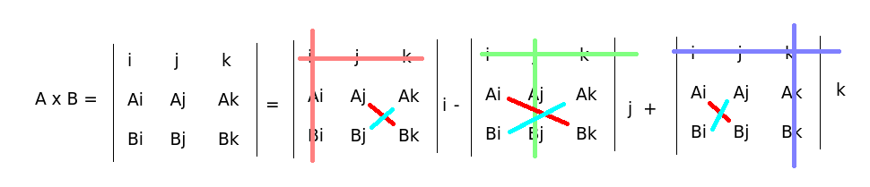
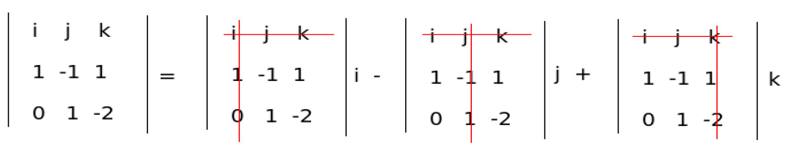

Ristitulo
Contents
Ristitulo#
Kolmiulotteisten vektorien ristitulo eli vektoritulo \(\vec{a} \times \vec{b}\) on tärkeä sovelluksissa. Ristitulon avulla voidaan laskea esimerkiksi tilavuuksia ja pinta-aloja.
Ristitulon laskun tulos on vektori, joka on kohtisuorassa kumpaakin vektoria vastaan, siis \((\vec{a} \times \vec{b})\cdot \vec{a}=0\) ja \((\vec{a}\times \vec{b}) \cdot \vec{b}=0\).
Ristitulon laskujärjestys ei ole vaihdannainen, siis yleisesti \(\vec{a} \times \vec{b} \neq \vec{b} \times \vec{a}\).
Ristitulo voidaan kaavamaisesti laskea seuraavasti:
\(\vec{a} \times \vec{b}=(a_y b_z-a_z b_y) \vec{i}-(a_x b_z-a_z b_x) \vec{j}+(a_x b_y-a_y b_x) \vec{k}\),
missä \(a_x,a_y,a_z\) ovat vektorin \(\vec{a}\) komponenttien kertoimet ja \(b_x,b_y,b_z\) vektorin \(\vec{b}\) komponenttien kertoimet.
Jos vektorissa on vain kaksi komponenttia, niin kolmannen komponentin kertoimeksi asetetaan 0, siis esimerkiksi vektoria \(2 \vec{i} + 3 \vec{j}\) voi käyttää ristituloa vaativissa laskuissa, kun sen esittää muodossa \(2 \vec{i} + 3 \vec{j} + 0 \vec{k}\).
WolframAlphalla ristitulo lasketaan kertomerkillä *, siis (vektori1)*(vektori2) tai komennolla cross[(vektori1), (vektori2)].
Esim. Laske vektorien \(\vec{a}=3 \vec{i}+2 \vec{j}-\vec{k}\) ja \(\vec{b}=-5\vec{i}+3\vec{j}+\vec{k}\) ristitulo.
Ratkaisu
Edellisen laskukaavan mukaan ristitulo on
\(\vec{a} \times \vec{b}=(2\cdot 1-(-1)\cdot 3) \vec{i}-(3\cdot 1-(-1)\cdot (-5)) \vec{j} + (3\cdot 3-2\cdot (-5))\vec{k}\)
\(=(2+3) \vec{i}-(3-5) \vec{j} + (9+10) \vec{k}=5 \vec{i}+2\vec{j}+19\vec{k}\).
WolframAlphalla lasku onnistuisi komennolla (3,2,-1)*(-5,3,1).
Laskeminen determinanttien avulla#
Ristitulon laskeminen käsin onnistuu ns. kolmirivisen determinantin avulla. Determinantteihin palataan myöhemmin matriisien yhteydessä. Käytännössä ristitulon laskeminen tapahtuu seuraavalla reseptillä:
Kirjoitetaan ruudukkoon ylimmäksi riviksi yksikkövektorit, 2. riviksi vektorin \(\vec{A}\) kertoimet ja 3. riviksi vektorin \(\vec{B}\) kertoimet. Ruuudukon ympärille tulee itseisarvomerkit kuvaamaan sitä, että kyseessä on determinantin laskeminen.
Peitetään 1. rivi ja 1. sarake. Kerrotaan jäljelle jäävät luvut ristikkäin. Vähennetään 1. lukuparin (vasen ylä-, oikea alakulma) tulosta 2. lukuparin (vasen ala-, oikea yläkulma) tulo. Kerrotaan tulos yksikkövektorilla \(\vec{i}\).
Peitetään 1. rivi ja 2. sarake, kerrotaan jäljelle jäävät luvut ristikkäin ja vähennetään luvut toisistaan kuten edellä. Kerrotaan yksikkövektorilla \(\vec{j}\).
Peitetään 1. rivi ja 3. sarake. Kerrotaan jäljelle jäävät luvut ristikkäin ja vähennetään luvut toisistaan kuten edellä. Kerrotaan yksikkövektorilla \(\vec{k}\).
Lasketaan vaiheiden tulokset yhteen, paitsi keskimmäiselle termille vaihdetaan miinusmerkki.

Esim. Laske vektorien \(\vec{a}=\vec{i}-\vec{j}+\vec{k}\) ja \(\vec{b}=\vec{j}-2\vec{k}\) ristitulo determinanttia hyödyntämällä.
Ratkaisu
Laskeminen taulukon avulla:

\(\vec{a}\times \vec{b}=[(-1)(-2)-(1\cdot 1)] \vec{i}-[1\cdot (-2)-1\cdot 0]\vec{j}+[1\cdot 1-(-1\cdot 0)] \vec{k} \)
\( = \vec{i}+2\vec{j}+\vec{k}\)
Esim. Laske ristitulo \(\vec{a}\times \vec{b}\) käsin. Tarkista tietokoneella. Lisäksi tutki vastauksen oikeellisuutta laskemalla \((\vec{a}\times \vec{b})\cdot \vec{a}\).
a) \(\vec{a}=4\vec{i}-\vec{j}+5\vec{k}, \vec{b}=\vec{i}-3\vec{j}-4\vec{k}\)
b) \(\vec{a}=\vec{i}+2\vec{j}, \vec{b}=2\vec{i}+\vec{j}+\vec{k}\)
Ratkaisu
a) \(\vec{a}\times\vec{b} = \begin{vmatrix} \vec{i} & \vec{j} & \vec{k} \\ 4 & -1 & 5 \\ 1 & -3 & -4 \\ \end{vmatrix}\)
\(=[(-1)\cdot (-4)-5\cdot (-3)] \vec{i}-[4\cdot (-4)-5\cdot 1]\vec{j}+[4\cdot(-3)-(-1)\cdot 1] \vec{k}\)
\(=(4+15) \vec{i} -(-16-5) \vec{j} + (-12+1) \vec{k}=19 \vec{i}+21 \vec{j}-11 \vec{k}\).
WolframAlpha-komento cross([4,-1,5],[1,-3,-4]) antaa tuloksen [19,21,-11].
Lisäksi voidaan laskea \((\vec{a}\times \vec{b})\cdot \vec{a}=19\cdot 4+21 \cdot (-1)-11\cdot 5=0\).
b) \(\vec{a}\times\vec{b} = \begin{vmatrix} \vec{i} & \vec{j} & \vec{k} \\ 1 & 2 & 0 \\ 2 & 1 & 1 \\ \end{vmatrix}\)
\(=(2\cdot 1-0\cdot 1) \vec{i}-(1\cdot 1-0\cdot 2) \vec{j} + (1\cdot 1-2 \cdot 2) \vec{k}\)
\(= 2 \vec{i}-\vec{j}-3\vec{k}\).
WolframAlpha-komento cross([1,2,0],[2,1,1]) antaa tuloksen [2,-1,-3] ja lisäksi voidaan laskea \((\vec{a}\times \vec{b})\cdot \vec{a}=1\cdot 2+2\cdot (-1)+0\cdot (-3)=0\).
Huom! Edellisessä ohjeessa ristitulo laskettiin ”ensimmäisen rivin suhteen”. Sen voi kuitenkin laskea taulukon minkä tahansa rivin sai sarakkeen suhteen. Jos taulukossa on paljon nollia tai muita helppoja lukuja, niitä voi hyödyntää valitsemalla sopiva tapa ristitulon laskemiseen. Lopputulos on joka tavalla laskettuna sama.